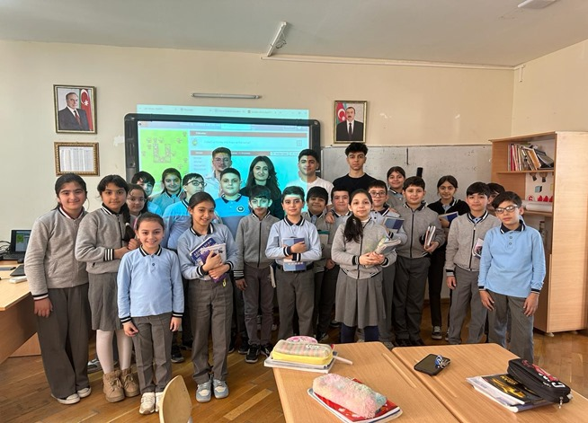

Meet with one of our group projects!
This is one of the projects called Hour of Code that we have done together. Thanks to Araz Yusubov who teaches us Principles of Information Systems at our university, we have enjoyed every moment of our Hour of Code project. It was the group project designed to introduce the young students with the fundamental concepts of programming. Our one of group members, Fidan Majnunova organized the school that we operated the Hour of Code at. Fidan obtained permission from school number 282 easily because it was the school Fidan had studied in for 11 school years. and they provided us with a room in which there were 22 laptops and a board with a projector. The director of the school, Saadet Mammadova assigned the fifth graders to us to collaborate and operate the project. We planned everything meticulously beforehand to finish all the material we had covered with them. Because we wanted to make sure that it was both informative and entertaining for the students, and since they were fifth graders, we decided to give them tasks in which they can learn commands such as move forward, turn left and right, and repeat number of times. We guessed that school children can`t know English at a very good level, we altered the language to Azerbaijani for the students to understand clearly. Our event occurred on 28th of March at 13:10 in Surakhani, Yeni Gunashli, however we arrived there earlier to set up the classroom and arrange the laptops equipped with educational coding software. Later, young 21 fifth graders began to enter the classroom and then we started to operate our project. Firstly, we all started to introduce ourselves to the fifth graders and one of our team members, Olcayto Noyan Ersay took the opportunity to give information about our ADA university. After Olcayto was done with his part, other group members Fidan, Ilyas, and Amir Reza began with an entertaining entrance where they gave students explanations of the commands and the tasks. After making sure that they grasped the meaning of these commands, we asked them to sit in front of the laptops and gave them individual simple tasks from codeacademy.com to complete on their own. We would like to thank our professor, Araz Yusubov for introducing us to this incredible and educative website. Whoever wants to learn programming can enter this website and learn about programming languages. In a nutshell, we and the fifth graders enjoyed the event. They thanked us at the end and asked us to come again. Arzu Aliyeva, who is the head teacher of the fifth graders and also Fidan Majnunov`s head teacher during her school years deserves appreciation from us, because without her support and guidance, we wouldn`t be successful in our project.
